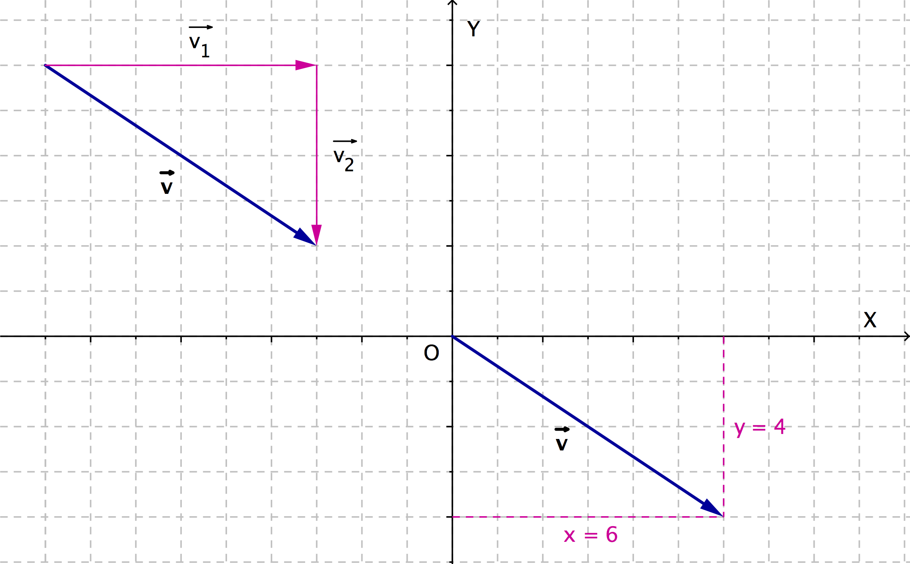
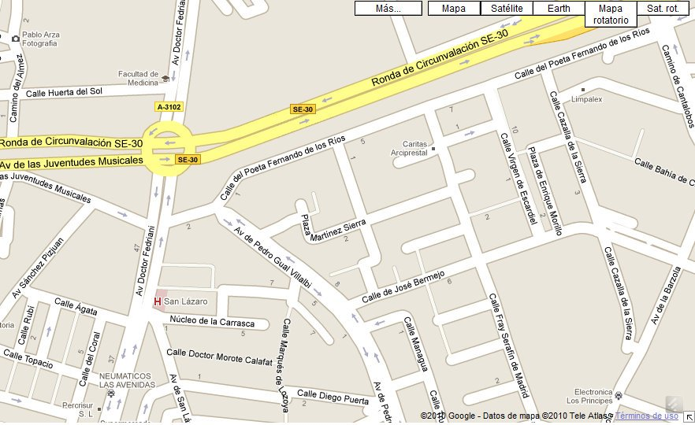

1.1. Conceptos básicos
Vamos a comenzar a formalizar el concepto de vector haciendo uso de nuevo de los desplazamientos.
Supongamos que vamos circulando por la única carretera existente entre dos ciudades, ciudad \(\mathrm{A}\) y ciudad \(\mathrm{B}\).
Tenemos dos posibles opciones, a las que llamamos vectores, que no son más que distintas maneras de orientar el segmento \(\overset{\vdash \hspace{-.1em} \rule[1.15mm]{1.8 mm}{0.15mm} \hspace{-.1em} \dashv}{\mathrm{AB}} \) .
1. Circulamos desde \(\mathrm{A}\) hacia \(\mathrm{B}\). Lo representamos como vector \(\overrightarrow{\mathrm{AB}} \). El origen es el punto \(\mathrm{A}\) y el extremo el punto \(\mathrm{B}\).
2. Circulamos desde B hacia \(\mathrm{A}\). Lo representamos como vector \(\overrightarrow{\mathrm{BA}} \) . El origen es el punto \(\mathrm{B}\) y el extremo el punto \(\mathrm{A}\).
En los dos casos, la distancia entre los puntos \(\mathrm{A}\) y \(\mathrm{B}\) (ciudades \(\mathrm{A}\) y \(\mathrm{B}\)) es la misma y se denomina módulo del vector.
La situación presentada es una de las infinitas ocasiones en las que necesitamos hacer uso de los vectores.
Definición. Vector fijo.
|
Un vector fijo no es más que un segmento orientado entre dos puntos que denotaremos por \(\overrightarrow{\mathrm{AB}} \). El punto \(\mathrm{A}\) se llama origen y el \(\mathrm{B}\) extremo. Atributos característicos de un vector fijo son: * Dirección: Es la recta que pasa por los puntos \(\mathrm{A}\) y \(\mathrm{B}\) * Sentido: Es el que va del origen al extremo del vector * Módulo: Es la longitud del segmento \(\overset{\vdash \hspace{-.1em} \rule[1.15mm]{1.8 mm}{0.15mm} \hspace{-.1em} \dashv}{\mathrm{AB}} \). Se representa \(\lvert\overrightarrow{\mathrm{AB}}\rvert \). Cuando dos vectores fijos tienen iguales la dirección, el módulo y el sentido diremos que son equipolentes (o equivalentes). |
|
Definición. Vector libre.
| Un vector libre está compuesto por un vector fijo y todos los vectores equipolentes a él. Cada uno de estos vectores fijos es un representante del vector libre. |
Dicho de otro modo, un vector libre no es más que un vector fijo que se puede trasladar libre y paralelamente a sí mismo. Todos los representantes de un vector libre, tienen la misma dirección, el mismo sentido y el mismo módulo.
Los vectores libres se escriben entre corchetes \([\overrightarrow{\mathrm{AB}}] \) o con letras minúsculas, \(\vec{u}\), ya que no hay dependencia de su origen y extremo, cualquier representante lo identifica.
¿Cuántos vectores libres has obtenido con la agrupación anterior?
Cuatro, ¿verdad?. Los 17 vectores fijos, han quedado reducidos a tan sólo cuatro vectores libres. O sea, que en principio hay muchos vectores fijos pero en muchos casos representan el mismo vector libre, es decir, representan el mismo desplazamiento.
Hasta aquí bien, hemos visto la cara geométrica de los vectores. A continuación, veremos la cara algebraica de los mismos y, de aquí en adelante, trabajaremos en paralelo desde ambos mundos: "el geométrico (dibujos) y el algebraico (coordenadas)"
Ya sabes que los vectores indican desplazamientos desde un punto origen a un punto extremo. Desplazamientos que tienen dos componentes: la componente horizontal (hacia la derecha o hacia la izquierda) y la componente vertical (hacia arriba o hacia abajo). Cada uno de ellos es realmente un vector y la suma de ambos vectores indicará el desplazamiento total. Esta es la base sobre la que se sustenta la introducción de las coordenadas de los vectores y que representa la conexión entre los dos mundos: dibujos y coordenadas.
|
 |
| Las coordenadas del vector v son (+6,-4) Desplazamientos: Horizontal x= +6 (hacia la derecha), Vertical y=-4 (hacia abajo) |
Si observas con detenimiento la escena anterior de Descartes (Vectores libres), comprobarás que lo que ocurre es que todos los vectores equipolentes representan exactamente los mismos desplazamientos, todos tienen las mismas coordenadas. Partiendo de distintos orígenes pero, al fin y al cabo, los mismos desplazamientos.
Comprueba lo aprendido
Solución
Solución
Para que un determinado servicio web, como puede ser Google Maps o cualquier otro servidor de mapas o un GPS, que tengamos en nuestro vehículo o en el propio móvil, nos pueda proporcionar una ruta en coche para "Ir desde: " "Hasta: " es necesario, previamente, etiquetar correctamente en la cartografía el/los sentido/s del tráfico permitido/s. De nuevo, son importantes los vectores en nuestras vidas así como el sentido de los mismos.
|
 |
| Vectores: sentido del tráfico en la cartografía. Imprescindible para el cálculo de rutas en los navegadores |
Si este trabajo sobre la cartografía, no se ha realizado correctamente o, por ejemplo, el Ayuntamiento de una ciudad ha cambiado el sentido del tráfico de una determinada calle y la cartografía no lo ha actualizado, nos podemos encontrar con que el navegador de nuestro coche nos indique:
"Gire a la derecha" y ... ¡sorpresa! no es posible porque es sentido prohibido.
Fíjate hasta qué punto, es importante el sentido de los vectores en el cálculo de itinerarios/rutas.
Y ya que estamos con calles y rutas ...
¿Podrías decir cuánto mide una calle?
Efectivamente, la longitud del segmento que hay de un extremo a otro de la misma. Pues este es exactamente el concepto de módulo de un vector.
¿Y la distancia que recorres de un determinado punto a otro? ¿cómo la obtendrías?
Pues definiendo un vector, entre los puntos origen y destino (extremo) y calculando el módulo del mismo.
Definición. Módulo.
|
· El módulo (o longitud) de un vector \(\vec{v}=(v_1,v_2)\) es igual a la longitud del segmento que une su origen y su extremo. El módulo, puede ser calculado de un modo sencillo (haciendo uso del Teorema de Pitágoras), mediante la siguiente fórmula: \(|\vec{v}|=\sqrt{v_1^2+v_2^2}\)
· Un vector es unitario si su módulo vale \(1\). A partir de cualquier vector, \(\vec{v}\), podemos obtener otro vector, \(\vec{u}\), que tenga la misma dirección y el mismo sentido que \(\vec{v}\) pero que sea unitario, es decir, con módulo igual a \(1\). Basta dividir, cada una de las componentes (coordenadas) de \(\vec{v}\) entre el módulo de \(\vec{v}\), \(|\vec{v}|\) . \(\vec{u}=\dfrac{\vec{v}}{|\vec{v}|}\)
|
Veamos en el siguiente vídeo cómo se calcula el módulo de un vector y cuál es su aplicación más directa:
Comprueba lo aprendido
La prensa nuestra de cada día.
Definiciones. Vectores opuestos y concurrentes.
|
Dos tipos de vectores especiales son los vectores opuestos y los concurrentes: · El opuesto de un vector \(\vec{v}=(v_1,v_2)\) es otro vector que tiene el mismo módulo y dirección que \(\vec{v}\) , pero distinto sentido. Se representa por \(-\vec{v}\) y sus coordenadas son \(-\vec{v}=(-v_1,-v_2)\) · Dos vectores son concurrentes si tienen el mismo origen, es decir, si parten del mismo punto. |
Comprueba lo aprendido
La señora está enferma ...
y no puede ir a recoger el periódico. Realiza una llamada al kiosko para comunicarlo y, el kioskero, muy amablemente, decide llevárselo a su casa.
Retroalimentación
Verdadero
Es el mismo pero en sentido contrario.Retroalimentación
Falso
Los desplazamientos que realizan vienen descritos por vectores opuestos. Por tanto, el opuesto de \((8,-6)\) [Vector del trayecto de la señora hacia el kiosko] es el \((-8,6)\) [Vector del trayecto del kioskero a la casa de la señora]. Ésto es, \(6\) metros hacia el Norte y \(8\) metros hacia el Oeste.
Retroalimentación
Verdadero
Es correcto, porque conocemos que el origen de ambos trayectos es el mismo, el kiosko. Como los vectores tienen el mismo origen, son concurrentes.Retroalimentación
Falso
Tiene la misma distancia, porque sus vectores son opuestos, mismo recorrido pero en sentido contrario y, sabemos que, los vectores opuestos tienen el mismo módulo (la misma longitud). ¡Compruébalo, usando la escena de Geogebra, pinta los dos vectores y calcula sus módulos.Retroalimentación
Falso
Es el \((0,-20)\), "\(0\)" en dirección horizontal (Este-Oeste) y "\(20\)" en dirección vertical (Sur, hacia abajo, por tanto, negativa)
El módulo de un vector es una distancia, por tanto, siempre es positiva o nula. Vale \(20\), lo puedes comprobar pintando el vector en el applet de Geogebra y calculando su módulo o, directamente, desde aquí:
\(|(0,20)|=\sqrt{0^2+(-20)^2}=\sqrt{400}=20\)
Retroalimentación
Verdadero
Para obtener un vector unitario, a partir de uno dado, sólo hace falta dividir cada una de las coordenadas de dicho vector entre el módulo del mismo.
\(|(8,-6)|=\sqrt{8^2+(-6)^2}=\sqrt{100}=10\)
\( \vec{u}=\left( \dfrac{8}{10},-\dfrac{6}{10} \right) \overset{simplificando}{=} \left( \dfrac{4}{5},-\dfrac{3}{5} \right) \)